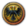
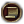
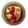
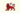

通常情况下，一个国家（tag）的名称是固定的，但从1.30版本起，引入了变更国家名称的机制。改变国家名称的机制是通过override_country_name效果实现的。
游戏中有部分特殊事件、决议等，能够允许一个国家改变名称；仅有国家的名称及其形容词会发生改变，国家tag不会变化；这一点与成立国家并不相同。
截止目前版本，大多数成立国家的决议会移除装饰性的国家名称。此外，当有装饰性国名生效时，可以选择在获得新国名的10年内通过决议“恢复我国国名”，来取消装饰性国名，使用默认的国家名称。
下面列出了所有允许国家改变名称的游戏内容种类。部分内容需要特定DLC才能使用。
革命改变国家名称
当一个国家通过革命或法国大革命灾难成为革命国家后，该国家的名称会被改变为“革命[原国家名]”（Revolutionary/Rev. [NAME]）。
- 特殊地，如果该国家的名称以“The”开头，则发生革命后的国家名称为“The Revolutionary [NAME]”；这类国家目前包括 普法尔茨、 教宗国、 医院骑士团和 群岛。由于中文中并不存在这一问题，汉化补丁中的中文本地化文件仍将其处理为“革命[原国家名]”。
- 部分国家在发生革命后会采用特殊的名称；这类国家目前包括 中国皇帝、 奥斯曼和 莫卧儿。详见本页面“事件改变国家名称”一节。
决议改变国家名称
| 新国家名称 | 决议 | 可用国家 | 备注 | 所需 DLC |
|---|---|---|---|---|
| The Caliphate 哈里发国 |
伊斯兰教国家 | |||
| The Kingdom of God 天主的国 |
教宗国 | |||
| Lithuanian-Polish Commonwealth 立陶宛波兰联邦 |
立陶宛[1] | 通过决议成立 波兰立陶宛联邦后，满足特定条件时国家名称将设为“立陶宛波兰联邦” | ||
| The Hanseatic League 汉萨同盟 |
日耳曼文化组国家 哥得兰 里加 但泽 |
通过决议时，国家tag将成为 吕贝克，国家名称将设为“汉萨同盟” | ||
| Kalmar union 卡尔马联盟 |
斯堪的纳维亚
|
通过决议成立 斯堪的纳维亚后，满足特定条件时国家名称将设为“卡尔马联盟”或“北海帝国” | ||
| North Sea Empire 北海帝国 |
斯堪的纳维亚 | |||
| Iran 伊朗 |
波斯 | - | ||
| Revolutionary Iran 革命伊朗 |
是革命国家 | |||
| Eastern Roman Empire 东罗马帝国 |
拜占庭 | 该决议在完成拜占庭任务“查士丁尼的野心”、触发事件“罗马归于罗马人”后解锁 | ||
| Seljuk Empire 塞尔柱帝国 |
创建缩略图出错：文件丢失 罗姆
|
|||
| Hungary-Austria 匈牙利-奥地利 |
奥地利-匈牙利
|
|||
| The United Crowns 联合王冠 |
尼德兰 | 该决议在拥有 大不列颠或 英格兰作为被联统国时可用 |
任务改变国家名称
| 新国家名称 | 决议 | 可用国家 | 备注 | 所需 DLC |
|---|---|---|---|---|
| Burma 缅甸 |
东吁 卑谬 阿瓦 |
|||
| Hariphunchai 骇黎朋猜 |
兰纳 / 勃固 | 勃固完成该任务后，如果 兰纳是勃固的非朝贡附属国，则兰纳的国家名称被改变为“骇黎朋猜” | ||
| Dvaravati 陀罗钵地 |
阿瑜陀耶 / 勃固 | 勃固完成该任务后，如果 阿瑜陀耶是勃固的非朝贡附属国，则阿瑜陀耶的国家名称被改变为“陀罗钵地” | ||
| Ramannadesa 罗摩那提沙 |
勃固 | |||
| The Hanseatic League 汉萨同盟 |
汉堡 不来梅 |
 | ||
| Later Jin 后金 |
满洲 | |||
| Kirishitan Japan 吉利支丹日本 |
日本 | 以特定方式完成该任务可将国家名称改变为“吉利支丹日本” | ||
| The Shogunate 日本幕府 |
以特定方式完成该任务，分别可将国家名称改变为“日本幕府”、“日本帝国” | |||
| Empire of Japan 日本帝国 | ||||
| Outremer 海外 |
耶路撒冷 / 法兰西 | 法兰西完成该任务后，如果 耶路撒冷是法兰西的附属国，则耶路撒冷的国家名称被改变为“海外” | ||
| Napoleonic Spain 拿破仑西班牙 |
西班牙 / 法兰西 | 法兰西完成该任务后，如果 西班牙拥有至少 500 总发展度且是法兰西的附属国，则西班牙的国家名称被改变为“拿破仑西班牙” | ||
| Napoleonic Italy 拿破仑意大利 |
首都位于意大利的国家 / 法兰西 | 法兰西完成该任务后，如果其拥有一个首都位于意大利区域且该国家拥有至少 500 总发展度，则该国家的国家名称被改变为“拿破仑意大利” | ||
| Atzlan 阿兹特兰 |
阿兹特克 | |||
| Chagatai 察合台 |
东察合台 | |||
| Gurkani 古列干 |
帖木儿 | |||
| Gothia 哥特 |
狄奥多罗 | |||
| Bohemian Commonwealth 波希米亚联邦 |
波希米亚 |
事件改变国家名称
| 新国家名称 | 事件 | 可用国家 | 备注 | 所需 DLC |
|---|---|---|---|---|
| Revolutionary China 革命中华 |
 事件 天朝的革命 |
中国皇帝 | 该事件仅在 中国皇帝发生革命后触发；取消革命后国名为“中华”（China） | |
| Revolutionary Turkey 革命土耳其 |
事件 [政府名称]的垮台 | 奥斯曼 | 该事件仅在 奥斯曼发生革命后触发；取消革命后国名为“土耳其”（Turkey） | |
| Revolutionary Gurkani Empire 革命古列干帝国 |
事件 [国家名]的革命 | 莫卧儿 | 该事件仅在 莫卧儿发生革命后触发；取消革命后国名为“古列干帝国”（Gurkani Empire） | |
| Srivijaya 室利佛逝 |
事件 海洋之国 | 马来亚
|
该事件仅在通过 |
|
| Majapahit Empire 满者伯夷帝国 |
马来亚
| |||
| Nusantara 努山达拉 |
马来亚 | |||
| Pueblo 普韦布洛 |
事件 古代先祖 | 普韦布洛文化国家 | 该事件仅在完成 |
|
| Dai Nam 大南 |
事件 天命 | 大越 安南 东京 |
该事件仅在完成 |
|
| Viet Nam 越南 | ||||
| The Hanseatic League 汉萨同盟 |
事件 女王桂冠的新生 | 吕贝克 | 该事件仅在完成 |
|
| Finnish Baltic Empire 芬兰波罗的帝国 |
事件 芬兰帝国宏图 | 芬兰 | 该事件仅在完成 |
 |
| Finnish Empire 芬兰帝国 | ||||
| Greater Finland 大芬兰 | ||||
| Suomi 索米 | ||||
| North Sea Empire 北海帝国 |
事件 重建北海帝国 | 丹麦 挪威 斯堪的纳维亚 |
该事件仅在完成 |
|
| Ducal Prussia 普鲁士公国 |
事件 索恩和约 | 普鲁士 / 波兰 | 该事件仅在完成 |
|
| Angevin Empire 安茹帝国 |
事件 安茹国家 | 安茹王国 | 该事件可在完成 |
|
| Angevin Duchy 安茹公国 | ||||
| Angevin Republic 安茹共和国 | ||||
| Angevin Holy State 安茹神圣国 | ||||
| Angevin State 安茹国 | ||||
| Devlet-i Rûm 罗姆国 |
事件 罗马帝冠 | 奥斯曼 | 该事件仅在完成 |
|
| Great Armenia 大亚美尼亚 |
事件 大亚美尼亚的重生 |  亚美尼亚 |
该事件仅在完成 |
|
| Hungary-Austria 匈牙利-奥地利 |
事件 奥地利革命结束 | 奥地利-匈牙利
|
该事件仅在 灾难奥地利革命结束时触发；可以选择成立 奥地利-匈牙利，改变国家名称为“匈牙利-奥地利” | |
| Zanzibar 桑给巴尔 |
事件 桑给巴尔苏丹 | 阿曼 | 该事件仅在完成 |
|
| Ayyubids 阿尤布 |
事件 重建阿尤布苏丹国 | 哈桑凯伊夫 | 该事件仅在完成 |
|
| Ulug Ulus 兀鲁黑兀鲁斯 |
事件 大国 | 金帐 | 该事件仅在完成 |
|
| Austrian Empire 奥地利帝国 |
事件 建立新帝国 | 奥地利 | 该事件仅在完成 |
|
| Australia-Hungary 澳大利亚-匈牙利 |
事件 澳匈帝国？ | 奥地利-匈牙利
|
该事件仅在完成 |
|
| La Serenissima 最尊贵共和国 |
事件 黄金共和国 | 威尼斯 | 该事件仅在完成 |
奥斯曼行省名称
| 只适用于DLC霸业激活时。 |
奥斯曼可以经由事件释放部分特定国家为 （未识别的字符串“eyalet”用于 {{Icon}}） 行省附属国，同时该国家将获得装饰性国家名称。
| 行省名称 | 事件 | 对象国家 | 备注 | 所需 DLC |
|---|---|---|---|---|
| Eyalet-i Misir 密思儿行省 |
事件 马穆鲁克苏丹国的陷落 | 埃及/ 马穆鲁克 | 霸业 | |
| Eyalet-i Macaristan 马扎尔行省 |
事件 匈牙利行省 | 匈牙利 | ||
| 事件 匈牙利领土的行政 | ||||
| Eyalet-i Erdel 埃尔代尔行省 |
事件 匈牙利领土的行政 | 特兰西瓦尼亚 | ||
| Eyalet-i Slovakya 斯洛伐克行省 |
尼特拉 | |||
| Eyalet-i Avusturya 奥地利行省 |
事件 附庸奥地利 | 奥地利 | ||
| Eyalet-i Venedik 威尼斯行省 |
事件 管理北意大利 | 威尼斯 | ||
| Eyalet-i Lombardiya 伦巴第行省 |
米兰 萨伏依 费拉拉 |
|||
| Eyalet-i Cenova 热那亚行省 |
热那亚 | |||
| Siqilliya 西西里 |
事件 西西里的命运 | 西西里 那不勒斯 两西西里 |
||
| Eyalet-i Sicilya 西西里行省 | ||||
| Eyalet-i Roma 罗马行省 |
事件 罗马行省 | 托斯卡纳 佛罗伦萨 锡耶纳 佩鲁贾 斯波莱托 乌尔比诺 |
||
| Eyalet-i Endülüs 安达卢斯行省 |
事件 安达卢斯行省 | 安达卢西亚 格拉纳达 |
||
| Eyalet-i Tunus 突尼斯行省 |
事件 突尼斯行省 | 突尼斯 | ||
| 事件 管理突尼斯 | ||||
| Eyalet-i Trâblus Gârb 西的黎波里行省 |
事件 管理突尼斯 | 的黎波里 | ||
| Eyalet-i Cezayir-i Gârb 西杰扎伊尔行省 |
事件 管理阿尔及尔 | 阿尔及尔 特莱姆森 |
||
| Eyalet-i Fas 非斯行省 |
事件 摩洛哥行省 | 摩洛哥 | ||
| 事件 管理摩洛哥 | 摩洛哥 苏斯 马拉喀什 塔菲拉勒特 创建缩略图出错：文件丢失 得土安非斯 |
|||
| Eyalet-i Adal 阿达尔行省 |
事件 阿达尔行省 | 阿达尔 | ||
| 事件 非洲之角行政 | 阿达尔 哈勒尔 奥萨 |
|||
| Eyalet-i Yemen 也门行省 |
事件 也门行省 | 也门 | ||
| 事件 也门的管理 | 也门 亚丁 拉西 |
|||
| Eyalet-i Pers 波斯行省 |
事件 波斯施政 | 波斯 阿尔达比勒 法尔斯 |